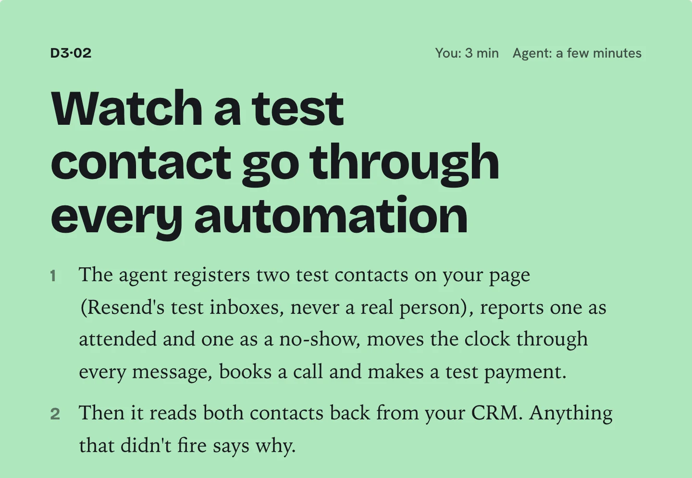
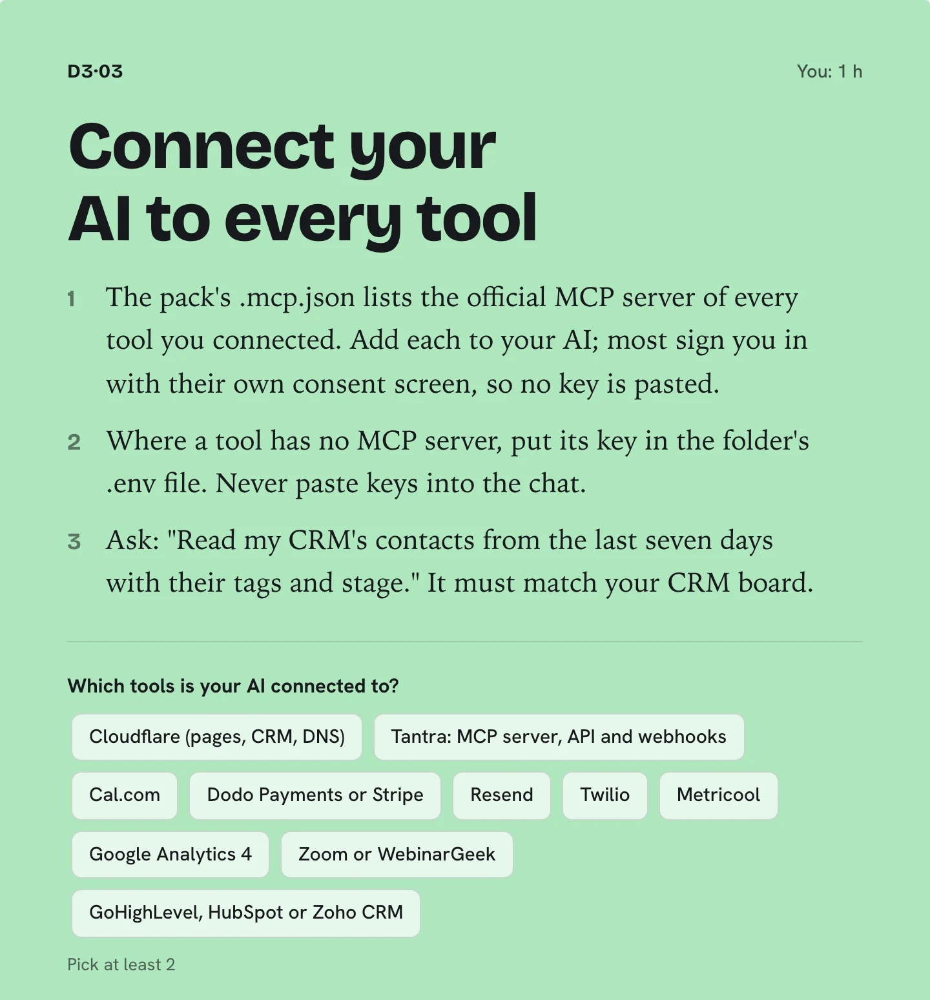
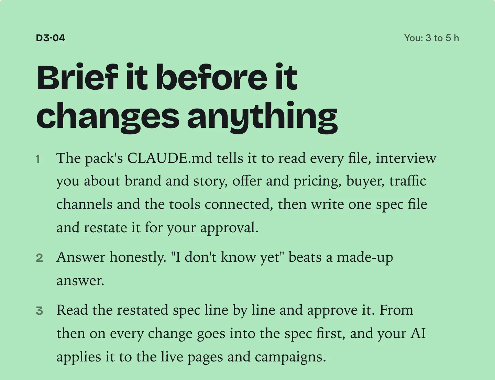
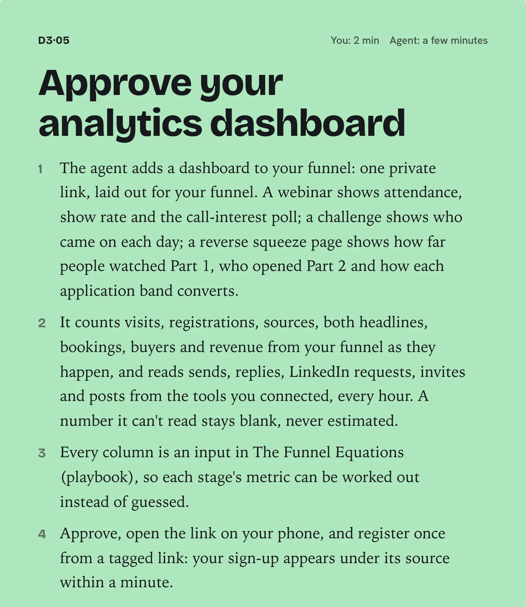
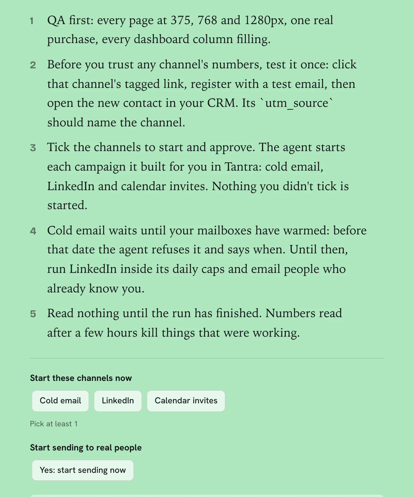
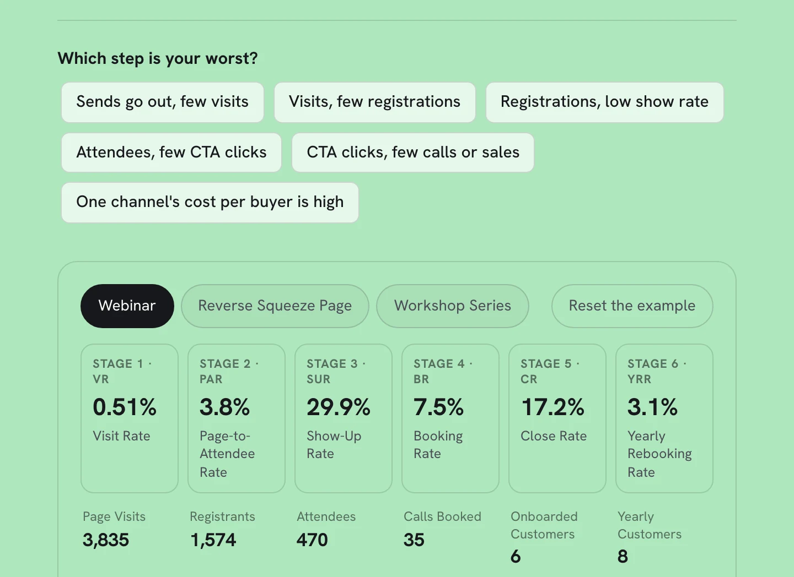
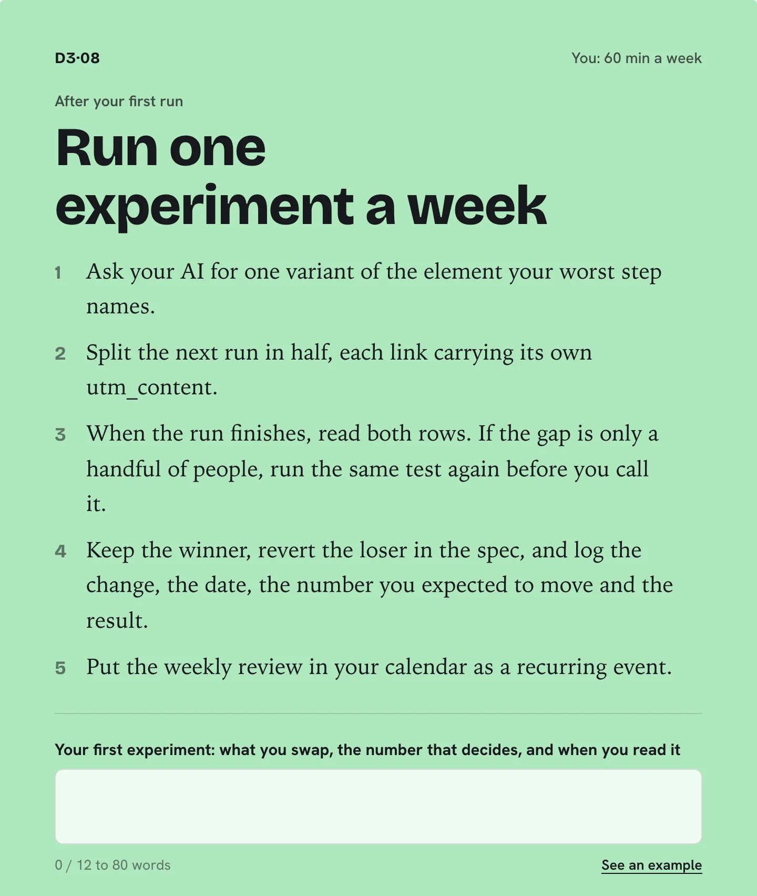

Put an AI Agent in Charge of Your Funnel, Then Find the One Number to Fix
Let me ask you something: right now, could you tell me which step of your funnel is losing you the most money?
Most founders can't. Not because they're careless, but because the numbers live in six different tools and nobody has time to stitch them together.
Today that changes. Claude Code takes over the running of your funnel through each tool's API, one dashboard shows every number from the first touch to the cleared payment, and a weekly loop fixes the weakest step and keeps whatever wins.
By the end of today, you'll have a revenue engine that improves itself every week. Here's how.
Claude Code is the worked example. Any agentic coding tool that supports MCP works the same way.
When: Steps 1 to 5 happen now. Steps 6 to 8 happen after your first run finishes (your event date from Day 1 Step 7), because they read that run's numbers.
D3·0160 min
Join the Day 3 Session
Why It Matters
You see the whole Day 3 arc: your own AI takes over the funnel, one dashboard counts every step, and a weekly loop improves one thing.
Skip it and the last three cards look optional; the session shows why they wait for your first run's real numbers and then repeat weekly.
How It Works
What You Do
Join live, or watch the recording before you run your Day 3 prompts.
Note any tool you use that has no file in knowledge/integrations/ and bring it to the Q&A.
Every Step
Join live, or watch the recording here afterwards.
After the 45 minutes of teaching, work through the day's cards.
Done When
Joined or watched.
What Good Looks Like
Treat Claude Code as the worked example. Codex works the same way, and a Claude or ChatGPT project runs the same prompts by handing you files and clicks.
Split the day in two: connect, brief, prove, add the dashboard and launch now; read, test and plan after the run.
Watch for the order. Your AI only changes what you approved in the spec, so the brief comes before any edit.
Common Mistakes
Treating Day 3 as the finish line. The experiment loop is a weekly habit, not a one-off project.
Letting your AI edit live pages before it has restated the spec and you approved it.
Reading the dashboard hours after launch and switching off a channel that was working.
D3·025 min
Plan Your Day 3
Why It Matters
Today's list is read in order and the hours to finish it are blocked in your calendar before you start.
Without a plan the day goes to whichever card you open first, and the slow cards (warm-up, approvals, verification) start last.
How It Works
What You Do
Read today's list once, top to bottom.
Block the 14 to 19 hands-on hours in your calendar.
Every Step
Open your plan and read today's list once, top to bottom, before you touch a tool. Most people skip this, then lose an hour to the wrong card.
Day 3 takes 14 to 19 hands-on hours outside the session. Find them in your calendar now and block them.
Start with the test run. It checks every page before a real person sees it, so do not launch anything before it passes.
Done When
Today's list is read and the hours are blocked.
What Good Looks Like
Put the work that has a clock on it first, because waiting time cannot be rushed.
Run the test run before any real send.
Block whole hours, not gaps between meetings.
Common Mistakes
Opening the first card you see and skipping the order the plan gives you.
Planning the day without putting the hours in your calendar.
D3·033 min
Watch a Test Contact Go Through Every Automation
Why It Matters
You get an honest register of every automation: proven, failing with its reason, or not built yet, read back from your CRM rather than assumed.
An automation that never fires loses leads silently, and you only notice weeks later when a dashboard row looks wrong.
How It Works
What the Agent Does
Opens your page as a visitor and checks the sign-up form is really there.
Registers two test contacts on Resend's test inboxes, tagged test and outside every real count.
Moves the clock to each timed message for those two contacts only, then reads them back.
Books a test call and sends a signed test payment wherever your close is built.
What You Do
Read every failing line's reason and fix that step before you launch traffic.
Rerun after each fix until nothing says failing.
Every Step
The agent registers two test contacts on your page (Resend's test inboxes, never a real person), reports one as attended and one as a no-show, moves the clock through every message, books a call and makes a test payment.
Then it reads both contacts back from your CRM. Anything that didn't fire says why.
Done When
Every automation that is built fired for the test contacts.
Task 3.3Prove the Automations With a Real Contact
Why: The automations built on Day 2 do the follow-up nobody remembers to do. One that never fires loses leads silently, and you only notice weeks later on the dashboard.
Ask Claude Code to fill the automation register (the template under this step in the onboarding centre): each automation's trigger, action, tool and honest status. On route A they are GoHighLevel workflows; on route B they are Cloudflare Workers.
Point Tantra's outbound webhooks (RSVP, reply, bounce, unsubscribe) at your workflow or Worker, so every response lands on the contact. Webhook setup is documented on usetantra.com/developers.
Test three automations from the diagram: 1 (confirmation and reminders), 3 (your own page's form) and 4 (the webinar attended or live webinar not watched tag). Use a short test session (10 minutes in Zoom or WebinarGeek): register yourself and attend, register a second address and don't show, then refresh attendance in Tantra.
Ask Claude Code to read both contacts back and confirm every tag and stage.
Example: for a consultancy, the no-show test shows the replay email firing but the live webinar not watched tag missing, so the next-day follow-up never sends.
OwnerYou · agent wires itToolGoHighLevel or Cloudflare Workers · Tantra webhooksTime4 to 6 hDeliverableA register with honest statuses, three automations provenProofThe no-show contact gets its tag without you touching anything
Trigger → condition → action, eight times
Automations 1 to 6 fire the moment their event happens. 7 and 8 run on a schedule, because inboxes and clocks send no webhooks; on route B that schedule is a Cloudflare Cron Trigger. Prove 1, 3 and 4 first: confirm, capture, tag.

The test contact card. The agent registers two test contacts and says why anything didn't fire.
What Good Looks Like
Not built is honest, not broken. A failure means something you built didn't fire, so fix failures first.
Watch the absent contact most closely: a missing no-show tag silently stops every follow-up meant for people who missed it.
A message sent down the wrong branch counts as a failure, exactly like a message that never went.
Your own AI takes over from this register on Day 3, so it has to hold proven facts, not hopes.
The Missing No-Show Tag
In the playbook's SaaS example, the no-show test showed the replay email firing but the live webinar not watched tag missing. Without that tag the next-day follow-up never sent. Nothing looked broken from the outside; only reading the test contact back from the CRM exposed it.
workshop-plan/playbook.html
Common Mistakes
Launching traffic while a line still says failing; the leak surfaces weeks later as an empty column.
Assuming a sent confirmation proves the rest. Every timed message and branch is checked on its own.
Fixing a failure without rerunning, so the register still says failing.
D3·041 h
Connect Your AI to Every Tool
Why It Matters
Your AI can read live numbers and make changes in every tool you use, so it answers you and your team from real data instead of memory.
An unconnected tool becomes a blind spot: your AI guesses its numbers, and a guessed number becomes a fact in next month's review.
How It Works
What You Do
Put each tool's key into .env, one line per key, never into a chat.
Tick a tool only once its test answer matched what that tool shows.
Every Step
Put the key of every tool you connected into your Tantra RevOps OS project's .env file, never into a chat. Each tool's file in knowledge/integrations/ says where its key lives.
In a Claude Code or Codex session in the project, run node scripts/api.mjs tools: every tool you use must read ready.
Ask: "Read my CRM's contacts from the last seven days with their tags and stage." It must match your CRM board.
Done When
Its answer matches your CRM.
Task 3.1Connect Your AI to Every Tool
Why: Your AI can only run what it can reach. Connected to each tool, it reads live numbers, makes changes, and answers your team from real data instead of memory.
Start a new session in your Tantra RevOps OS project, the folder you set up on Day 0. Your Day 1 and Day 2 prompts already saved your decisions into context/ and what your AI built into outputs/, and .env beside them holds your keys.
Connect Tantra: create a dedicated API key (see usetantra.com/developers) and paste it into .env. Your AI calls Tantra's REST API through node scripts/api.mjs, which logs every call and refuses to send or launch without your approval. Tantra's MCP Server page is there if you also want Tantra inside other chats.
Add every other tool from the table below. One key or token per tool, all in .env, never pasted into the chat. Then run node scripts/api.mjs tools: every tool you use must read ready. In a Claude or ChatGPT project there is no .env: your AI gives you each tool's settings page and you paste the key there yourself.
Create one Google service account: in Google Cloud, IAM & Admin → Service Accounts → Create service account. Open it, then Keys → Add key → Create new key → JSON. Save the file in the folder and its path in .env.
For Sheets and GA4: enable the Google Sheets API and the Google Analytics Data API in that Google Cloud project. Then in GA4, open Admin → Property access management, add the service account's email and give it the Viewer role.
Test it. Ask: "List my Tantra campaigns with sends, RSVPs and replies for the last seven days." The answer must match Tantra's own dashboard.
Example: for a software company on route B, the folder holds the Day 1 and Day 2 files, a Tantra key, the Cloudflare API token from Day 1 and one Google service account that covers Sheets and GA4.
OwnerYou · agent connectsToolTantra RevOps OSTime1 hDeliverableEvery tool reachable from one folderProofYour AI quotes last week's Tantra numbers correctly
Tool
Connect with
Your AI uses it to
Tantra
MCP server · REST API key · outbound webhooks (11 event types)
Read campaigns, sends, RSVPs and replies; draft campaigns and step templates; push replies and RSVPs to your CRM
GoHighLevel (route A)
API with a Private Integration token
Read and update contacts, tags, opportunities and pipeline stages
Cloudflare Workers (route B)
API token · the wrangler CLI
Deploy your pages and automation Workers; run scheduled jobs with Cron Triggers
Google Sheets and Drive
A service account JSON, with the sheet shared to it
Write the dashboard
Google Analytics 4
Analytics Data API, same service account, added as Viewer on the property
Visits and registrations by page variant and UTM
Dodo Payments
API key · payment webhook
Sales and revenue
Zoom or WebinarGeek
Through Tantra's integration
Attendance, once you refresh it in Tantra after each session
Claude Code in the middle: context in, operations out
Claude Code holds your context and reaches each tool through its API or MCP server, so anyone on the team can ask it a question or give it an instruction.

The Connect your AI card. Tick each tool once your AI can read from it.
What Good Looks Like
Keys live in .env only. scripts/api.mjs reads them from there, so your AI calls a tool without ever printing the key, and no key lands in a chat transcript.
Every call goes through scripts/api.mjs. It logs each one to outputs/api-log.jsonl and refuses to send, launch, buy or delete without your approval, so a connected tool is still a safe one.
In a Claude or ChatGPT project there is no terminal and no .env: your AI names each tool's settings page and you paste the key there yourself. Check the result in the tool's own dashboard.
Test each tool with a number you can see in its own dashboard. A matching answer is the proof.
Which tools is your AI connected to?
Tick only the tools that read ready and whose answer matched what the tool itself shows. Cloudflare holds your pages and CRM, so it is the first one to prove.
Common Mistakes
Ticking a tool as connected because its key is in .env, before its test answer matched.
Sharing or syncing the folder with .env still inside it.
Using one all-powerful admin key everywhere instead of one key per tool.
D3·053 to 5 h
Brief It Before It Changes Anything
Why It Matters
One approved spec, context/spec.md, holds every price, date, link and promise once, and from then on changing the spec is how anything live changes.
Skip it and your AI works from scattered answers; a price worded one way on the page and another in an email goes live unnoticed.
How It Works
What the Agent Does
Your AI reads everything in context/ and outputs/, then asks you only about what is missing or contradicts itself.
It writes context/spec.md with every fact once, and restates it for your approval before touching anything live.
What You Do
Answer from what is true today, not what you hope will be true.
Correct the restated spec line by line, then approve it in the session.
Every Step
Your Day 3 prompt for this card has your assistant read everything in context/ and outputs/, then write context/spec.md: every fact once (price, guarantee, event date, booking link, offer sentence, buyer, channels, tools), and restate it for your approval.
Answer honestly. "I don't know yet" beats a made-up answer.
Read the restated spec line by line and approve it. From then on every change goes into the spec first, and your AI applies it to the live pages and campaigns.
Done When
You change a line in the spec and it goes live without you touching a tool.
Your Day 3 Prompt Does the Asking
Your Day 3 prompt for this card already carries your answers and names the files. If you ever need to run it by hand, start a new session in your Tantra RevOps OS project and send this:
"Read everything in context/ and outputs/. Then ask me, a few questions at a time, only about what is missing or contradicts itself: brand and story, offer and pricing, buyer, traffic channels and the tools connected. Wait for my answers. Then write context/spec.md, with every price, date, link and promise once, and restate it for my approval. Do not change anything live until I approve it."
Task 3.2Run the Interview, Then Approve the Spec
Why: What you give the agent before you ask decides whether it runs your funnel or a generic one. Having it write the spec and restate it gives you one cheap chance to catch a misunderstanding before anything live changes.
Run your Day 3 prompt for this card in a new session (or send the message above).
Answer honestly. "I don't know yet" beats a made-up answer.
Read the restated spec line by line and correct it.
Approve. From then on every change goes into the spec first, and your AI applies it to the live pages and campaigns. On route A, GoHighLevel page content can't be edited through its API, so your AI gives you the page changes to paste in, and applies the rest itself. In a Claude or ChatGPT project it hands you every changed file and the exact clicks instead.
Example: for a course business, the interview catches a cohort start date that differs between the landing page and the reminder email.
OwnerYou · agent buildsToolTantra RevOps OSTime3 to 5 hDeliverableAn approved context/spec.md and a live URLProofYou change a line in the spec and it goes live without you touching a tool: the Worker-served page on route B, a Tantra step template on route A

The briefing card: your AI reads your context, asks only about the gaps, writes one spec file, and you approve it line by line.
What Good Looks Like
Hold each fact once. Price, guarantee, event date and booking link live in context/spec.md, and every page, message and campaign copies them from there.
Read the restatement hunting for the same fact worded two ways. That is the error this step exists to catch.
Where you don't know yet, say so and name when you'll decide, rather than leaving a placeholder it treats as fact.
Change the spec first, never the tool directly. Your AI then updates every deliverable that carries the fact and lists what it changed.
The facts your spec must hold once: price, guarantee, event date and booking link
Write each fact exactly as a buyer should read it, with currency and time zone. If two pages could word it differently, settle the wording here.
A Trial Length Caught Early
In the playbook's SaaS example, the interview surfaced a trial length that differed between the landing page and the reminder email. The restated spec held one value, so both were corrected from the same line before anything live changed.
workshop-plan/playbook.html
Common Mistakes
Approving the restatement after a skim; it is your one cheap chance to catch a misunderstanding.
Letting your AI fill gaps with plausible answers instead of leaving them open.
Making a quick fix inside a tool, so the spec and the live page disagree.
D3·0610 min
Swap to Your Live Key
Why It Matters
While your Dodo or Stripe key is a test key, a buyer can pay but no money moves. Real buyers need the live key.
Real buyers can pay you: the checkout runs on your live Dodo or Stripe key and money actually moves.
Buyers reach a checkout that looks normal, pay with a test key, and no money arrives. You find out from an angry customer.
How It Works
What the Agent Does
Checks once a day whether your payment account is approved for live payments, and says so here.
Rebuilds the checkout in live mode once you approve the close again.
Every Step
Check that Dodo or Stripe has approved your account for live payments. The centre looks once a day and will say here when it may be time.
Open the Connect Dodo Payments or Connect Stripe card on Day 0, paste the live key and click Replace the key.
Open the Approve your close card, choose Yes: take real payments, and approve again so the checkout is rebuilt in live mode.
Click Check my live key. It passes only when the key you stored is a live key.
Done When
Your stored payment key is a live key.
What Good Looks Like
Swap only after the test run passed end to end, so the first live payment is not also the first test.
Make one real purchase yourself at the lowest price, then refund it: it proves money moves and refunds work.
Common Mistakes
Pasting the live key but not approving the close again, so the checkout stays in test mode.
Going live before the provider approved the account, so payouts are held.
D3·072 min
Approve Your Analytics Dashboard
Why It Matters
One private link shows every count from first touch to sale for your funnel shape, and what your content earns beside it, counted as it happens and read from your tools hourly.
A number that isn't on the dashboard gets guessed, and a guessed number becomes a fact in next month's review.
How It Works
What the Agent Does
Redeploys your funnel with a dashboard route and its own read-only token.
Checks the private link answers before it calls the dashboard live.
Reads sends, replies and LinkedIn activity from your connected tools once an hour.
Reads each post's reach, engagement and clicks, your followers, newsletter and WhatsApp numbers, video plays and blog sources every hour, and joins each post to its sign-ups by utm_content.
Shows 'Not yet' for a tool that isn't connected, never a zero, with the card that connects it.
What You Do
Decide who gets the link; anyone who has it sees your numbers.
Bookmark it on your phone so every weekly review starts there.
Every Step
The agent adds a dashboard to your funnel: one private link, laid out for your funnel. A webinar shows attendance, show rate and the call-interest poll; a challenge shows who came on each day; a reverse squeeze page shows how far people watched Part 1, who opened Part 2 and how each application band converts.
It counts visits, registrations, sources, both headlines, bookings, buyers and revenue from your funnel as they happen, and reads sends, replies, LinkedIn requests and invites from the tools you connected, every hour. A number it can't read stays blank, never estimated.
The Content section sits beside the funnel: reach, engagement rate, clicks, and the registrations and booked calls your content brought in, this week against last. Below it: top posts, pillars, formats, each profile and network, your newsletter and WhatsApp, and your videos. Each post is matched to its sign-ups by its own utm_content tag.
Every column is an input in The Funnel Equations (playbook), so each stage's metric can be worked out instead of guessed.
Approve, open the link on your phone, and register once from a tagged link: your sign-up appears under its source within a minute.
Done When
Your dashboard is up and your test sign-up shows under its source.
What it shows: one row per run and per source, with every count from first touch to sale: sends or invites, RSVPs, landing visits, registrations, attendees, CTA clicks, calls booked, sales, revenue, and the page variant. Rates sit between each pair. Where it lives: a private link on your funnel, which the agent adds when you approve the card. Tantra's own dashboard keeps the outreach detail; your dashboard is where every tool's numbers meet. Building it by hand instead? A Google Sheet copied from the Per-Run Session Analytics Sheet template does the same job.
Task 3.4Build the Dashboard and Let It Fill Itself
Why: The dashboard is how you find the leak. A number that isn't on it gets guessed, and a guessed number becomes a fact in next month's review.
Copy the template into your Drive and share it with your service account.
Tag every link with UTMs, using utm_content for the page or template variant. Install GA4 and Microsoft Clarity (both free) on every page.
Ask Claude Code to write the job that fills one row per run from Tantra, GA4, your CRM and Dodo Payments. On route B, schedule it nightly with a Cron Trigger; on route A, ask Claude Code to run it before each weekly review.
Walk the funnel on your phone as a test contact, run the job, and check your row. Leave a cell blank rather than estimate it.
Example: for a consultancy, the cold calendar run and the LinkedIn run sit on separate rows, so the cost per booked consultation for each channel is side by side.
OwnerYou · agent wires itToolGoogle Sheets · GA4 · Clarity · Claude CodeTime2 to 3 hDeliverableA dashboard that fills without typingProofYour test registration appears as a row you never typed
The Columns, Stage by Stage
One column for every input in The Funnel Equations.
You can post for a month, watch the likes climb, and still not know if a single post filled a seat. The Content section fixes that. It sits beside your funnel and reads your tools every hour.
Five cards, this week against last: reach, engagement rate, clicks, registrations from content and booked calls from content.
Top posts, by pillar, by format: reach, engagement rate and clicks next to the registrations and booked calls each one brought in.
By profile and network: followers and followers gained, from Metricool.
Newsletter and WhatsApp: sends, clicks and replies per week, from Tantra. Tantra reports no opens, so you won't see any.
Video and blog: plays and average watched from Wistia, blog views and sessions by source from Google Analytics.
The join is one tag. Write every post's link with utm_content as pillar-format-id (for example pipeline-carousel-07). Untagged, a post still shows its reach, but its registrations stay blank. A source you haven't connected stays blank too, with the card that connects it.
Read the last two columns first. Reach says a post was seen. Registrations and booked calls say it worked.

The dashboard card. Approve it, and the agent adds a private dashboard to your funnel.
What Good Looks Like
One row per run and per source. Without the split, a strong channel hides a weak one in the average.
Give every page or template variant its own utm_content, so later experiments read as separate rows.
A blank cell is information. Leave it blank rather than estimate it.
Test contacts carry the tag test and stay out of every count, so your own checks never inflate the numbers.
Write every post's utm_content as pillar-format-id, so posts, pillars and formats line up against registrations and booked calls.
Two Channels, Two Rows
In the playbook's SaaS example, the calendar invite run and the LinkedIn run sit on separate rows. Cost per trial for each channel is side by side instead of blended into one average, so the budget question answers itself.
workshop-plan/playbook.html
Common Mistakes
Sharing untagged links, so sign-ups land without a source and channels can't be compared.
Filling a blank with a guess to make the board look complete.
Acting on the tiles while a run is still in progress.
Posting a link without its own utm_content: the post's reach shows, its registrations stay blank.
D3·0810 min
Set Your Weekly Content Loop
Why It Matters
Content compounds only when last week's numbers shape next week's ideas. One fixed slot a week keeps the engine running after the workshop ends.
A fixed weekly slot where last week's numbers decide what this week's batch keeps, changes and drops.
The engine stops the week the workshop ends, or keeps making the format nobody clicks.
How It Works
What the Agent Does
Pulls each post's impressions, clicks and reactions from Metricool, and registrations from your funnel by each post's UTM tag.
Rolls them up by format, pillar and profile, and writes Keep, Change and Repeat the mechanism at the top of next week's ideas.
Adds what you learned to your context bucket, and each post's result to the used-content registry.
What You Do
Block 90 minutes on the same weekday, every week.
Read last week's numbers before you run the batch, then tell it what to do more of and what to drop.
Every Step
Pick the weekday you run the batch prompt. Block 90 minutes for it in your calendar, every week.
Before each batch, open your dashboard's Content view and read last week: top posts, pillars and formats by reach, clicks and registrations.
Tell the batch prompt what to do more of and what to drop. Your AI adds what you learned to your context bucket and the used-content registry.
The weekly slot is in your calendar, with the numbers you will read.
Ever kept making the post that got the most likes, while the one that actually filled your event quietly got dropped? Likes are loud. Registrations are quiet. Read only the loud number and you'll get very good at the wrong thing.
This card sets one fixed slot a week where last week's numbers decide this week's batch.
The Weekly Ritual
Read last week's numbers, post by post.
Write three lines: keep, change, repeat the mechanism.
Run the batch prompt with this week's number and your must-cover topics.
Strike and keep ideas at the gate.
Review on the live link with your team, then approve scheduling.
That's the whole job, in one 90-minute slot a week.
The Numbers That Matter
Metric
Per
Where it comes from
Impressions
Post
Metricool's post analytics
Reactions, comments and shares
Post
Metricool
Engagement rate
Post
Reactions, comments and shares divided by impressions, worked out by your AI
Clicks
Post
Metricool
Followers gained
Profile, per week
Metricool
Registrations
Post
Your funnel's contacts, counted by each post's utm_content tag
Your AI rolls each one up by format, by pillar and by profile. A number it can't read stays blank with the reason, never a zero.
Keep, Change, Repeat the Mechanism
Before it writes next week's ideas, your AI reads the last two weeks of results and writes three lines at the top of the new ideas file:
Keep: the formats and pillars with the most registrations per post, then clicks, then impressions, with their numbers.
Change: the weakest one, and what to try instead: a new hook type, a new format, or the call to action moved to the first page.
Repeat the mechanism, never the angle: what made the best post work (its hook, its proof, its sample's layout), carried into new angles.
How Much Data Is Enough
Two weeks of a handful of posts per profile is a weak signal. When a "winner" rests on a few clicks, your AI says so, and keeps your pillar mix balanced until a pattern holds for three batches.
What Your AI Writes Back Every Week
The batch's results file, post by post, with every missing number marked and explained.
Each post's result beside its line in the used-content registry.
Every rule a reviewer gave in a note, into your voice or brand file with the date and their words.
What Good Looks Like
Judge a post by what it moved down the funnel: registrations first, then clicks, then impressions. Likes come last.
A few posts a week is a weak signal. Keep your pillar mix balanced until a pattern holds for three batches.
Repeat the mechanism, never the angle: carry what made the best post work into a new hook.
The whole ritual: read the numbers, run the batch with this week's number and must-cover topics, pick your ideas, approve on the live link.
Batch day
Early in the week leaves time to review and schedule before the posts start.
Numbers you read before each batch
Registrations and clicks per post first. Reach and engagement explain why; they are not the goal.
The Three Lines Before Every Batch
Keep: the formats and pillars with the most registrations per post, with their numbers. Change: the weakest one, and what to try instead, such as a new hook type, a new format or the call to action moved to the first page. Repeat the mechanism, never the angle: what made the best post work, carried into new angles.
revops-os/os/knowledge/content/analytics.md
Common Mistakes
Reading reach alone. A post with half the reach and four registrations beat it.
Calling a winner on a handful of clicks.
Skipping a week. The registry and the samples only stay fresh when every batch writes back.
D3·091 h
Launch One Small Test Run
Why It Matters
Strangers go through your funnel for the first time, cheaply, and your dashboard gets its first real row to learn from.
Until strangers go through it, every page and template is a guess, and a big first launch makes being wrong expensive.
How It Works
What the Agent Does
Starts each campaign it built in Tantra for the channels you tick, and nothing else.
Refuses cold email before your mailboxes have warmed, and says the day it can start.
What You Do
Choose the smallest audience per channel that still gives a readable run.
Leave a channel unticked to keep it a draft until it is ready.
Set the day you will read the numbers, after the run ends.
Every Step
QA first. The test run you approved already screenshotted every page at 375, 768 and 1280px and checked every dashboard column fits. Your part is one real purchase.
The test run also registered one test contact from each channel's tagged link and checked that its utm_source names the channel. Open the test contacts in your CRM to see them.
Tick the channels to start and approve. The agent starts each campaign it built for you in Tantra: cold email, LinkedIn and calendar invites. Nothing you didn't tick is started.
Cold email waits until your mailboxes have warmed: before that date the agent refuses it and says when. Until then, run LinkedIn inside its daily caps and email people who already know you.
Read nothing until the run has finished. Numbers read after a few hours kill things that were working.
Pick the launch date for your first small run.
Book your weekly review as a recurring event.
Open the cohort WhatsApp group (the link is on the Join the two WhatsApp groups card) and post your dashboard and the link to your live page, as a link or a screenshot. Leave out your prospect list: it holds other people's contact details.
Then run the weekly experiment loop (the Run one experiment a week card).
Done When
The test run is live, the launch date is set and the weekly review is in your calendar.
LinkedIn Caps Invites per Week
Once a connection request is withdrawn, LinkedIn blocks a new request to that person for three weeks.
Task 3.5Send One Small Test Run
Why: Until strangers go through it, every page and template is a guess. A small run keeps being wrong cheap and gives the dashboard its first real row.
QA first: every page at 375, 768 and 1280px, one real purchase, every dashboard column filling.
Launch the smallest version of each live channel, every link UTM tagged, all pointing at one registration page. Cold email and calendar invites wait until the Day 1 inboxes have warmed for 2 to 3 weeks (about the week after your workshop); until then, run LinkedIn inside its daily caps and email people who already know you.
Read nothing until the run has finished. Numbers read after a few hours kill things that were working.
Example: for a course business, one LinkedIn batch and one email to past course buyers feed the same session; cold calendar invites join once warm-up is done.
OwnerYouToolTantra · your channelsTime2 h to launchDeliverableThe first full run on the dashboardProofEvery buyer traces back to a channel via their UTM

The test run card. Tick the channels to start, and nothing you didn't tick is started.
What Good Looks Like
Point every channel at one registration page, so channels are compared on the same page, not different ones.
Start with people who already know you, such as past customers, while new mailboxes finish warming.
Launch every channel in the same window, so the run reads as one row per source.
When does your test run launch, and when is your weekly review?
Write the launch date, then the review weekday, time and time zone. Place the review after each run ends, not the morning after launch.
A Small First Run
In the playbook's SaaS example, one LinkedIn batch and one email to past trial users fed the same registration page. Calendar invites joined only once the mailboxes had finished warming. Every link carried its UTM tag, so each buyer traced back to a channel.
workshop-plan/playbook.html
Common Mistakes
Sending to full lists on day one, so a mistake costs the whole list instead of a test batch.
Starting cold email before warm-up ends and burning the sending domains you spent weeks warming.
Judging a channel a few hours in and switching off something that was working.
D3·1030 min
Read the Dashboard and Find the Worst Step
Why It Matters
You name the single step where your funnel leaks most, so this week's work goes there and nowhere else.
Change five things at once and you can't tell which one moved the number.
How It Works
What the Agent Does
Your weekly RevOps review prompt has your AI in Tantra RevOps OS fetch the run's numbers and name the step.
What You Do
Pick one step, even when two look weak.
Compare against your last run, not only against an ideal.
Every Step
Put your dashboard numbers into the Funnel Equation Model below and pick your funnel shape. Leave anything you could not fetch on its reference value and mark it unknown.
The model shows your six stage metrics. The stage whose metric is furthest below where it should be is your worst step; the Raise First list names the input inside it to change.
Done When
One step named, not three.
The Weekly Channel Check
- Fix it today: open rate under 15% (email only) or bounce over 5% is a deliverability problem, so stop that inbox today. Click-through under 1% means the inbox is fine and the message isn't, so rewrite the offer.
- Scale it: click-through at least 3%, conversion at least 1.5% and bounce at most 2%.
What to Change for Each Step
- Sends, few visits: the wrong list or a weak hook. Swap the outreach template or the list.
- Visits, few registrations: the page isn't earning the click. Swap the landing headline and hero.
- Registrations, low show rate: reminders. Swap one reminder or its timing.
- Attendees, few CTA clicks: the offer. Swap the offer slide and the CTA.
- CTA clicks, few calls or sales: friction after the click. Swap the booking page or the follow-up email.
- One channel's cost per buyer is high: the funnel is fine, that channel's traffic isn't. Move budget to the cheapest channel.
Task 3.6Name the One Step to Fix
Why: The weakest rate is where the week's work goes. Change five things at once and you can't tell which one moved the number.
When the run finishes, read five numbers: registration rate, show rate, CTA click rate, buyers, and cost per buyer.
Compare each rate with the rest of your funnel and with the last run. The lowest, or the one that dropped, is the worst step.
Find that row in the table below. It names the one page or template to swap.
Put your fetched numbers into the Funnel Equation Model below. It recalculates every stage and ranks each KPI by the booked calls it would add.
Example: for a software company, most registrants show up but almost nobody clicks the CTA, so the offer slide gets swapped, not the reminders.
OwnerYou · agent fetchesToolThe dashboard · the Funnel Equation ModelTime30 minDeliverableOne named stepProofOne step named, not three
The dashboard shows
Usually means
Swap this
Sends go out, few visits
Wrong list or weak hook: a traffic problem, not a funnel one
The outreach template in Tantra, or the list
Visits, few registrations
The page isn't earning the click
The landing page headline and hero
Registrations, low show rate
Reminders aren't landing
One reminder template, or its timing
Attendees, few CTA clicks
The offer isn't landing
The offer slide and the CTA
CTA clicks, few calls or sales
Friction after the click
The booking page or the follow-up email
One channel's cost per buyer is high
The funnel is fine; that channel's traffic isn't
Move budget to the cheapest channel

The worst step card. The model shows your six stage metrics, here with the webinar example numbers.
What Good Looks Like
Compare rates, not totals. A big count can still hide the lowest rate in the funnel.
A step that dropped since the last run is a candidate too: something changed, and a change is easier to trace.
Rule out traffic first. A high cost per buyer in one channel means moving budget, not rewriting pages.
Which step is your worst?
Pick the row whose rate is lowest or fell since your last run. Torn between two? Take the earlier step: it feeds the later one.
High Show Rate, Few Clicks
In the playbook's SaaS example, most registrants turned up but almost nobody clicked the call to action. Show rate was fine, so the reminders were left alone. The worst step was attendee to CTA click, and the offer slide was the one thing swapped.
workshop-plan/playbook.html
Common Mistakes
Naming three steps and fixing none of them properly.
Blaming the reminders when people turn up but don't click the offer; the dashboard row shows which.
Calling a step worst on a run that hasn't finished.
D3·1160 min a week
Run One Experiment a Week
Why It Matters
One controlled swap a week, judged on the dashboard, so the funnel improves from evidence and every change is on record.
Without a split and a log you can't tell what moved the number, and a lucky week becomes a permanent change.
How It Works
What the Agent Does
The same weekly review proposes one experiment and logs it in outputs/reviews/log.md, so next week starts from this one.
What You Do
Choose the one element to swap and the number that decides it.
Make the keep or revert call yourself.
Every Step
Ask your AI for one variant of the element your worst step names.
Split the next run in half, each link carrying its own utm_content.
When the run finishes, read both rows. If the gap is only a handful of people, run the same test again before you call it.
Keep the winner, revert the loser in the spec, and log the change, the date, the number you expected to move and the result.
Put the weekly review in your calendar as a recurring event.
Done When
Both halves are counted separately on your dashboard.
Task 3.7Swap One Thing, Read the Dashboard, Keep the Winner
Why: One swap per week, judged on the dashboard, is how the funnel improves without guessing. The worst step moves once you fix it, so this is a weekly habit, not a project.
Ask Claude Code for one variant of the element the table named: a second landing page, or a second version of the Tantra step template.
Split the next run in half. Half the list gets variant A, half gets B, each link carrying its own utm_content, so the dashboard counts them separately.
When the run finishes, read both rows. If the gap is only a handful of people, run the same test again before you call it.
Keep the winner, revert the loser in the spec, and log the change, the date, the metric you expected to move and the result.
Put the weekly review in your calendar as a recurring event.
Example: for a software company, variant B's headline names the integration buyers kept asking about. B wins on registration rate, becomes the page, and next week's experiment moves to show rate.
OwnerYou · agent fetchesToolClaude Code · the dashboard · the specTime60 minDeliverableOne live experiment and an experiment logProofBoth halves are counted separately on the dashboard
Six steps, one lap per week
Claude Code can refresh the dashboard, flag the worst step and propose a variant before the review. You decide what ships. Fix the worst step and a different one becomes the worst: that is the loop working.

The experiment card: one variant, one split run, and one number that decides.
The First Test to Run at Every Stage
Which part of a reverse squeeze should you change first?
Not the one you like least. Every stage has a first experiment, and a number it moves. Run one a week and keep whatever wins.
Stage
Test This First
The Number It Moves
S1 Traffic
Subject lines and opening lines, one channel at a time
Visit Rate, per channel
S2 Video page
The first 15 seconds of the video, when the button appears, and the exit prompt's wording
Half-Watch Rate, and clicks on the button
S3 Nurture
Subject lines, send times, and the order of your proof stories for people who applied
Nurtured Half-Watch Rate
S4 Application
Where the bridge threshold sits, starting at 75%
Booking Rate
S5 Close
Reminder timing, a deposit before the call, a second confirmation
How many booked calls are held
S6 Growth
The referral ask at week 4 against week 13 · the upgrade offer at week 26 against week 52
Yearly Rebooking Rate
What Good Looks Like
Change one thing only. Two changes in one variant leave you guessing which one worked.
Name the deciding number before the run, so you can't pick whichever metric flatters the result afterwards.
Expect the worst step to move once you fix it. A new worst step is the loop working.
Keep the cadence: refresh daily, experiment weekly, rebalance budget monthly, revisit offer and persona quarterly.
Your first experiment: what you swap, the number that decides, and when you read it
Name one element, one deciding number and one reading point. Tie the reading point to a finished run or a set number of sends, never a few hours.
A Headline That Named the Integration
In the playbook's SaaS example, variant B's headline named the integration buyers kept asking about. B won on registration rate and became the page. The next week's experiment moved on to show rate, the new worst step.
workshop-plan/playbook.html
Common Mistakes
Ending a test early because one half looks ahead after a day.
Keeping the winner live without updating the spec, so the spec and the page disagree.
Running two experiments on the same step at once.
D3·1245 min
Write Your Scale Plan
Why It Matters
Five lines that turn the dashboard into next month's decisions: what a buyer costs, where budget goes, what you test, sell next and keep.
Without it, budget follows habit or cost per click, and buyers leave after one purchase with nothing above it to buy.
How It Works
What the Agent Does
Your AI in Tantra RevOps OS rewrites these five lines monthly from fetched numbers.
What You Do
Fetch lines 1 and 2 from your dashboard and payment tool, not memory.
Name the next offer up and the first win you will deliver.
Every Step
Five lines. The first two must be fetched numbers, not estimates. The Funnel Equation Model below shows the six stage metrics for your funnel shape.
Done When
Lines 1 and 2 contain fetched numbers.
Line 5
Everyone else stays warm through the five tags (webinar registrant, webinar attended, live webinar not watched, watched webinar replay, purchased): each tag triggers its own follow-up.
Task 3.8Write the Scale Plan
Why: Five lines on one page turn the dashboard into next month's decisions. The first two must be fetched numbers, not estimates.
My cost per buyer is ___ and my lifetime value is ___.
My cheapest channel by cost per buyer is ___, so next month's budget moves toward it. Keep a small test budget on every other channel.
My worst step is ___ and this week's experiment is ___.
My ascension offer is ___: the rung above what they just bought.
My retention mechanism is ___: what produces the first win, and by when. Everyone else stays warm through the five tags (webinar registrant, webinar attended, live webinar not watched, watched webinar replay, purchased): each tag triggers its own follow-up.
Example: for a consultancy, line 3 reads "show rate; this week we test a WhatsApp reminder at one hour before."
The scale plan card. Lines 1 and 2 must be numbers you fetched, not estimates.
What Good Looks Like
Read cost per buyer against lifetime value. Around three times is healthy; below one, every customer costs more than they return.
Move budget toward the cheapest channel by cost per buyer, and keep a small test budget on every other one.
The ascension offer is the next rung, so a buyer has somewhere to go once the first purchase works.
Retention starts with a dated first win. Name what produces it and by when.
1. My cost per buyer is ___ and my lifetime value is ___
Cost per buyer is spend divided by buyers, from your dashboard. Take lifetime value from your payment tool; if you can't fetch it yet, write unknown.
2. My cheapest channel by cost per buyer is ___, so next month's budget moves toward it
Rank channels by cost per buyer, never cost per click or per registration. Then say how much budget moves.
3. My worst step is ___ and this week's experiment is ___
Copy the step from your worst step card and the swap from your experiment, so this plan and your experiment log agree.
4. My ascension offer is ___: the rung above what they just bought
Name the offer, its price and who it is for. It should solve the problem that appears once the first purchase works.
5. My retention mechanism is ___: what produces the first win, and by when
Name the first win in your buyer's own words, and the number of days it takes to reach it.
Line 3 in Practice
In the playbook's SaaS example, line 3 names show rate as the worst step and the week's test as a WhatsApp reminder one hour before. The model's rule of thumb sits beside it: lifetime value around three times cost per buyer is healthy, below one times it is not.
workshop-plan/playbook.html
Common Mistakes
Writing estimates in lines 1 and 2, so the model only confirms a guess.
Ranking channels by cost per click or per registration instead of cost per buyer.
Leaving line 5 vague, with no first win and no date.
D3·1360 min
Run Your Day 3 Prompts
Why It Matters
Today's cards collected your decisions. These prompts turn them into finished work inside Tantra RevOps OS: your own AI builds each task end to end, one task per session.
Day 3 finished inside Tantra RevOps OS: your AI connected to every tool, your spec approved, and a weekly review it runs with you from the same project.
The centre stops where its own agent stops. Without these prompts your AI never takes over, and next week's review starts from memory.
How It Works
What You Do
Run each prompt in its own new session, in the order shown.
When a prompt asks for a key, a click or your approval, do it, then reply "done" in that same session.
Every Step
Open your Tantra RevOps OS project in the assistant you set up on Day 0.
Run the first prompt, Save today's context, in a new session. It writes today's answers into the project, so every later prompt starts from them.
Run every other prompt in its own new session, in order. When one asks for a key, a click or your approval, do it and reply "done" in that session.
Done When
Every prompt ran, and STATUS.md in your project lists today's tasks as done.
What Good Looks Like
Keys go into .env before you run today's prompts. Your AI reads them through scripts/api.mjs and never needs one pasted into the chat.
Launch only with an approval in your own words. Your AI logs it in context/approvals.md, and scripts/api.mjs refuses a launch without one.
Keep the weekly review prompt. You run it every week from now on, and it appends to outputs/reviews/log.md so each week starts from the last.
Common Mistakes
Pasting a key into the chat when a prompt says one is missing. Put it in .env and reply "done".
Running next week's review in an old chat instead of a new session in the project.
Your Day 3 Summary
Claude Code connected to Tantra and every other tool, working from an approved spec.
Three automations proven with a real contact.
A dashboard that fills itself, with a first test run on it.
A weekly experiment loop in your calendar, and a five-line scale plan.